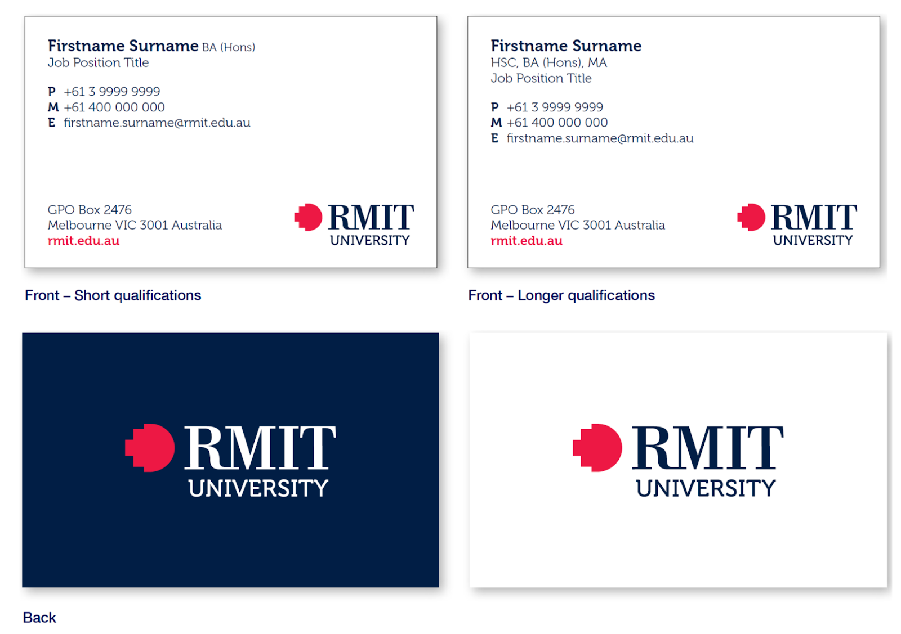
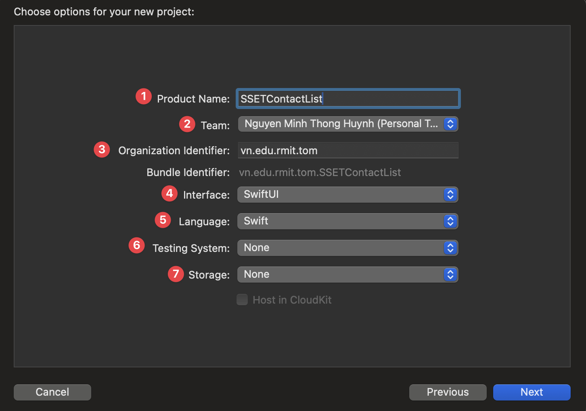
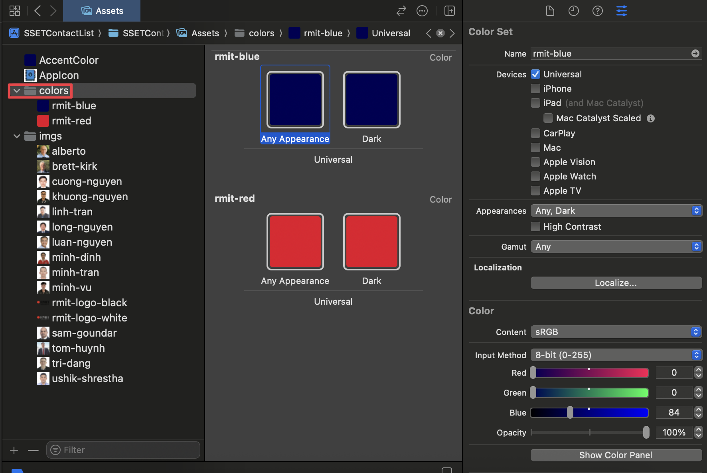

🎯 Lab Objective & Tasks
Objective
The goal of this assignment is to recreate the demonstration given in the lecture and then make some small enhancements. It is important that you understand what you are doing with each step of recreating the demo from lecture so that you are prepared to do those enhancements. Mostly this is about experiencing the creation of a project in Xcode and typing code in from scratch. Type it in and watch what Xcode does as you do so.
💼 Your Task
This lab, please recreate your own Contact List version based on the list of your favourite people of contacts (could be real or fictional). This project is inspired from actual RMIT business card papers.
There are five main SwiftUI files like I showed in the lecture:
ContactCard.swift: display one contact card.CircleImage.swift: display the circle image of a profile photo.InfoView.swift: display a row of information fields.ContactList.swift: display a list of contact rows. (Wrapped by Navigation View)ContactRow.swift: display one contact row in the list.
So you can take your time to create these basic views for the Contact List as below:
🐙 Github Integration in Xcode tips
🛠️ 1. Project Setup & File Organization
Step 1.1: Create a New Xcode Project
Instruction: Open Xcode, create a new project using the "App" template under iOS. Name it SSETContactList, ensure the Interface is "SwiftUI" and Language is "Swift".
Explanation: Every iOS application starts as an Xcode project. The "App" template provides the basic file structure for a SwiftUI application, including the app's entry point and a default content view.
Step 1.2: Organize Project Structure
Instruction: For better organization, create two new folders in your project navigator: "Model" and "Views". This separates your data logic from your UI components.
Explanation: A clean project structure is crucial for maintainability. Separating data (Model) from the user interface (Views) is a fundamental concept in software development, often referred to as the Model-View-ViewModel (MVVM) architecture, which SwiftUI is designed to work well with.
Step 1.3: Add Assets
Instruction: Drag all the necessary images and color sets into your Assets.xcassets file. Create subfolders for images (imgs) and colors (colors) to keep them tidy.
Explanation: The Asset Catalog (.xcassets) is the central place to manage all your app's visual assets. It automatically handles different device resolutions (1x, 2x, 3x) and allows you to define named colors that can be used throughout the app, making it easy to manage your app's theme.
Step 1.4: Add Colors
Instruction: In the Asset Catalog, you can also define custom colors for your app. Right-click in the asset list, select "New Color Set", and name it (e.g., "rmit-red"). You can then configure the color's value in the inspector.
Explanation: Using named colors from the Asset Catalog is a best practice. It allows you to manage your app's color scheme from a single location. If you decide to change a color later, you only need to update it in the Color Set, and the change will be reflected everywhere the color is used in your app. This is much more efficient than hardcoding color values in your code.
Step 1.5: Add the App Icon
Instruction: In your Assets.xcassets, find the AppIcon set. Drag your prepared 1024x1024 pixel app icon into the slots. Xcode will automatically generate the other required sizes.
Explanation: The App Icon is a critical part of your app's identity. You must provide a high-resolution 1024x1024 pixel version for the App Store listing. For best results, use a tool like appicon.co to generate all the necessary sizes from your main image.
Preparing for iOS 18+ Dark and Tinted Modes
With iOS 18, users can customize app icons with Dark Mode and color tints. To ensure your app looks great, it's highly recommended to provide three variants of your icon in the AppIcon set:
- Light (Default): Your standard, primary app icon.
- Dark: A version adapted for Dark Mode. It should match the style of dark system icons. You can often achieve this by using your icon's main color in the foreground and either omitting the background (letting the system add a dark one) or providing a custom dark background.
- Tinted: A fully opaque, grayscale version of your icon. The system will apply user-selected color tints to this variant. If you don't provide a specific tinted version, the system will apply the tint over your original icon, which can produce unpredictable and undesirable results.
Providing these variants ensures your app icon remains clear, recognizable, and consistent across all appearance modes.
📝 2. Setting Up the Data Model
Step 2.1: Create the Contact Struct
Instruction: Inside the "Model" folder, create a new Swift file named Contact.swift. This struct will define the properties for each contact. It must conform to Identifiable for use in SwiftUI Lists.
Explanation: A struct is a value type in Swift, perfect for modeling data like a contact. By conforming to the Identifiable protocol, we tell SwiftUI that each Contact instance has a unique id, which is required for List views to efficiently track and update rows. The image property is a computed property. Instead of storing a value, it computes and returns an Image view based on the imageName string, making it convenient to use directly in our views.
// Model/Contact.swift
import Foundation
import SwiftUI
import CoreLocation
struct Contact : Identifiable {
var id: UUID = UUID()
var name: String
var email: String
var phone: String
var imageName: String
var image: Image {
Image(imageName)
}
var locationCoordinate: CLLocationCoordinate2D
}Step 2.2: Create ModelData
Instruction: Create another Swift file in the "Model" folder called ModelData.swift. This file will hold the array of sample contact data that your app will display.
Explanation: In a real app, this data might come from a database or a network request. For this tutorial, we are "hardcoding" the data into a global array. This makes it easy to access the sample data from any view in the app for prototyping and building the UI.
// Model/ModelData.swift
import Foundation
import MapKit
var contacts: [Contact] = [
Contact(name: "Tom Huynh", email: "tom.huynh@rmit.edu.vn", phone: "0912325232", imageName: "tom-huynh", locationCoordinate: CLLocationCoordinate2D(latitude: 10.729410965174186, longitude: 106.69522548892152)),
// ... add all other contacts here
Contact(name: "Ushik Shrestha", email: "ushik.shrestha@rmit.edu.vn", phone: "0922345123", imageName: "ushik-shrestha", locationCoordinate: CLLocationCoordinate2D(latitude: 11.940952669293084, longitude: 108.45964507946036))
]🧱 3. Building Reusable View Components
Step 3.1: Create CircleView
Instruction: In the "Views" folder, create a new SwiftUI View file named CircleView.swift. This view takes an image and displays it as a styled circle.
Explanation: Creating small, reusable views like CircleView is a core principle of SwiftUI. It keeps your code clean and allows you to reuse the same styled component in multiple places. Here, we use modifiers: .clipShape(Circle()) to make the image circular, .overlay() to add a border, and .shadow() to give it depth.
// Views/CircleView.swift
import SwiftUI
struct CircleView: View {
var image: Image
var body: some View {
image
.clipShape(Circle())
.overlay(Circle()
.stroke(Color("rmit-red"), lineWidth: 3))
.shadow(color:Color("rmit-blue"), radius: 10)
}
}
#Preview {
CircleView(image: contacts[0].image)
}Step 3.2: Create InfoView
Instruction: Create InfoView.swift in the "Views" folder. This component is a reusable bar for displaying information like a phone number or email address.
Explanation: InfoView is another example of a reusable component. It uses a RoundedRectangle as a background and an HStack to place an icon and text side-by-side. The overlay modifier is used here to place the HStack on top of the rectangle shape.
// Views/InfoView.swift
import SwiftUI
struct InfoView: View {
var text: String
var imageName: String
var body: some View {
RoundedRectangle(cornerRadius: 25)
.fill(Color.white)
.frame(height: 50)
.overlay(
HStack{
Image(systemName: imageName)
.foregroundStyle(.rmitRed)
Text(text)
.foregroundStyle(.rmitBlue)
}
)
}
}
#Preview {
ZStack {
Color("rmit-blue")
.ignoresSafeArea()
VStack {
InfoView(text: "0123456789", imageName: "phone.fill")
InfoView(text: "tom.huynh@rmit.edu.vn", imageName: "envelope.fill")
}
}
}Step 3.3: Create MapView
Instruction: Create MapView.swift in the "Views" folder. This view uses MapKit to display a location based on coordinates.
Explanation: SwiftUI integrates seamlessly with MapKit. The Map view displays an interactive map. We use the initialPosition modifier to set the map's starting region, centered on the provided coordinates with a specific zoom level (span). A Marker is added to the map to indicate the exact location.
// Views/MapView.swift
import SwiftUI
import MapKit
struct MapView: View {
let myLocation: CLLocationCoordinate2D
var body: some View {
Map(initialPosition: .region(MKCoordinateRegion(
center: myLocation,
span: MKCoordinateSpan(latitudeDelta: 0.004, longitudeDelta: 0.004)
))) {
Marker("My House", coordinate: myLocation)
}
}
}
#Preview {
MapView(myLocation: CLLocationCoordinate2D(latitude: 10.729227879505439, longitude: 106.69579948556701))
}🎨 4. Assembling the Main Views
Step 4.1: Create ContactRow
Instruction: Create ContactRow.swift. This view defines the layout for a single contact in the list.
Explanation: This view defines the appearance of each row in our contact list. It takes a Contact object as input and uses an HStack to arrange the contact's image and name horizontally. This view will be used by the ContactList to build the scrollable list.
// Views/ContactRow.swift
import SwiftUI
struct ContactRow: View {
var contact: Contact
var body: some View {
HStack {
contact.image
.resizable()
.scaledToFit()
.frame(width: 50)
Text(contact.name)
}
}
}
#Preview {
VStack {
ContactRow(contact: contacts[0])
ContactRow(contact: contacts[1])
ContactRow(contact: contacts[2])
ContactRow(contact: contacts[3])
ContactRow(contact: contacts[4])
}
}Step 4.2: Create ContactList
Instruction: Create ContactList.swift. This view uses a NavigationView and List to display all contacts from your ModelData. NavigationLink handles tapping on a row.
Explanation: NavigationView provides the navigation bar at the top and allows for pushing new views onto the screen. The List view takes our contacts array and creates a ContactRow for each item. The NavigationLink wraps each row, making it tappable and specifying that tapping it should navigate to the ContactCard for that specific contact.
// Views/ContactList.swift
import SwiftUI
struct ContactList: View {
var body: some View {
NavigationView {
List (contacts) { contact in
NavigationLink{
ContactCard(contact: contact)
} label: {
ContactRow(contact: contact)
}
}
.navigationTitle("SSET Contact List 📒")
}
}
}
#Preview {
ContactList()
}Step 4.3: Create ContactCard (Detail View)
Instruction: Create ContactCard.swift. This is the detail view for a contact, combining the MapView, CircleView, and InfoView components.
Explanation: This is where we assemble our reusable components. A ZStack is used to layer the background color. A VStack arranges the MapView, CircleView, text, and InfoViews vertically. The .offset() modifier is used to pull the CircleView up so it overlaps the MapView, creating a more dynamic layout.
// Views/ContactCard.swift
import SwiftUI
struct ContactCard: View {
var contact: Contact
var body: some View {
ZStack {
Color("rmit-blue")
.ignoresSafeArea()
VStack{
MapView(myLocation: contact.locationCoordinate)
.frame(height: 250)
CircleView(image: contact.image)
.offset(y:-100)
.padding(.bottom, -100)
Text(contact.name)
.font(.system(size: 40, weight: .bold, design: .serif))
.foregroundStyle(.white)
Image("rmit-logo-white")
.resizable()
.scaledToFit()
.frame(width: 225)
Group {
InfoView(text: contact.phone, imageName: "phone.fill")
InfoView(text: contact.email, imageName: "envelope.fill")
}
.padding()
}
}
.toolbarBackground(
Color("rmit-blue"),
for: .navigationBar)
.toolbarBackground(.visible, for: .navigationBar)
.toolbarColorScheme(.dark, for: .navigationBar) // This makes the back button white
}
}
#Preview {
ContactCard(contact: contacts[0])
}Step 4.4: Update the App Entry Point
Instruction: Finally, ensure your SSETContactListApp.swift file is pointing to ContactList as the main view.
Explanation: The file marked with @main is the entry point of the app. The WindowGroup is the scene that contains your app's view hierarchy. We set its content to be an instance of ContactList, so that's the first screen the user will see when they launch the app.
// SSETContactListApp.swift
import SwiftUI
@main
struct SSETContactListApp: App {
var body: some Scene {
WindowGroup {
ContactList()
}
}
}✨ 5. Customization & Enhancements
⭐ Primary Required Features
- Complete the basics as shown in the lecture.
- Please select your own icon and your people's images and contact info in the list.
- Add your own logo (could be RMIT logo or something else).
- Generate the app icons and image assets for the Xcode project.
- Try different design for the contact card:
- Different color backgrounds.
- Different layouts of fields.
- Your RMIT student number
- Your address.
- Add different SF symbols at the end of the contact card to show what kind of personality they have! Like a gamer person should have a bunch of gaming icons of SF Symbols.
- Try different fonts as you like.
- Deploy the app on your phone to test it out!
- Push your project to your personal Github and add the README file like my Github repo example (https://github.com/TomHuynhSG/SSETContactList) (map branch which includes the map feature). By the end of the course, you will have multiple Github repo ready and polished so it would be helpful when you apply for jobs and need show off projects to employers or interviewers.
🔗 Useful Links
🗺️ 6. Second Map App: Creating a Dynamic Location Map App for Saigon and Hanoi with SwiftUI
🎯 Objective
Create a SwiftUI app that dynamically displays popular locations in Saigon and Hanoi on a map. Use MapKit to create custom annotations with emojis, and add a picker to switch between cities.
Requirements
- Map View with Custom Annotations: Create a map and add 5 custom annotations (with emojis) for popular locations in both Saigon and Hanoi.
- City Selection: Add a segmented picker to switch between Saigon and Hanoi, updating the map dynamically.
- Logo and Styling: Add a styled "RMIT Locations" logo.
- Data Handling: Use
CLLocationCoordinate2Dfor locations and organize the data for easy switching.